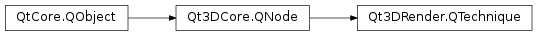

Qt3DRender.QTechnique¶
Synopsis¶
Functions¶
- def
addFilterKey(filterKey) - def
addParameter(p) - def
addRenderPass(pass) - def
filterKeys() - def
graphicsApiFilter() - def
parameters() - def
removeFilterKey(filterKey) - def
removeParameter(p) - def
removeRenderPass(pass) - def
renderPasses()
Detailed Description¶
Encapsulates a Technique.
A
Qt3DRender.QTechniquespecifies a set ofQt3DRender.QRenderPassobjects,Qt3DRender.QFilterKeyobjects,Qt3DRender.QParameterobjects and aQt3DRender.QGraphicsApiFilter, which together define a rendering technique the given graphics API can render. The filter keys are used byQt3DRender.QTechniqueFilterto select specific techniques at specific parts of the FrameGraph. If twoQParameterinstances with the same name are specified in aQTechniqueand aQRenderPass, the one in Technique overrides the one used in theQRenderPass.When creating an
QEffectthat targets several versions of a graphics API, it is useful to create severalQTechniquenodes each with aPySide2.Qt3DRender.Qt3DRender::QTechnique.graphicsApiFilter()set to match one of the targeted GL versions. At runtime, the Qt3D renderer will select the most appropriateQTechniquebased on which graphics API versions are supported and (if specified) theQFilterKeynodes that satisfy a givenQTechniqueFilterin the FrameGraph.Note
When using OpenGL as the graphics API for rendering, Qt3D relies on the
PySide2.QtGui.QSurfaceFormatreturned byQSurfaceFormat.defaultFormat()at runtime to decide what is the most appropriate GL version available. If you need to customize thePySide2.QtGui.QSurfaceFormat, do not forget to apply it withQSurfaceFormat.setDefaultFormat(). Setting thePySide2.QtGui.QSurfaceFormaton the view will likely have no effect on Qt3D related rendering.QTechnique *gl3Technique = new QTechnique(); // Create the render passes QRenderPass *firstPass = new QRenderPass(); QRenderPass *secondPass = new QRenderPass(); // Add the passes to the technique gl3Technique->addRenderPass(firstPass); gl3Technique->addRenderPass(secondPass); // Set the targeted GL version for the technique gl3Technique->graphicsApiFilter()->setApi(QGraphicsApiFilter::OpenGL); gl3Technique->graphicsApiFilter()->setMajorVersion(3); gl3Technique->graphicsApiFilter()->setMinorVersion(1); gl3Technique->graphicsApiFilter()->setProfile(QGraphicsApiFilter::CoreProfile); // Create a FilterKey QFilterKey *filterKey = new QFilterKey(); filterKey->setName(QStringLiteral("name")); fitlerKey->setValue(QStringLiteral("zFillPass")); // Add the FilterKey to the Technique gl3Technique->addFilterKey(filterKey); // Create a QParameter QParameter *colorParameter = new QParameter(QStringLiteral("color"), QColor::fromRgbF(0.0f, 0.0f, 1.0f, 1.0f)); // Add parameter to technique gl3Technique->addParameter(colorParameter);See also
-
class
PySide2.Qt3DRender.Qt3DRender.QTechnique([parent=nullptr])¶ Parameters: parent – PySide2.Qt3DCore.Qt3DCore::QNode
-
PySide2.Qt3DRender.Qt3DRender.QTechnique.addFilterKey(filterKey)¶ Parameters: filterKey – PySide2.Qt3DRender.Qt3DRender::QFilterKeyAdd
filterKeyto theQt3DRender.QTechniquelocal filter keys.
-
PySide2.Qt3DRender.Qt3DRender.QTechnique.addParameter(p)¶ Parameters: p – PySide2.Qt3DRender.Qt3DRender::QParameterAdd
parameterto the technique’s parameters.
-
PySide2.Qt3DRender.Qt3DRender.QTechnique.addRenderPass(pass)¶ Parameters: pass – PySide2.Qt3DRender.Qt3DRender::QRenderPassAppends a
passto the technique.
-
PySide2.Qt3DRender.Qt3DRender.QTechnique.filterKeys()¶ Return type: Returns the list of Qt3DCore::QFilterKey key objects making up the filter keys of the
Qt3DRender.QTechnique.
-
PySide2.Qt3DRender.Qt3DRender.QTechnique.graphicsApiFilter()¶ Return type: PySide2.Qt3DRender.Qt3DRender::QGraphicsApiFilter
-
PySide2.Qt3DRender.Qt3DRender.QTechnique.parameters()¶ Return type: Returns a vector of the techniques current parameters
-
PySide2.Qt3DRender.Qt3DRender.QTechnique.removeFilterKey(filterKey)¶ Parameters: filterKey – PySide2.Qt3DRender.Qt3DRender::QFilterKeyRemoves
filterKeyfrom theQt3DRender.QTechniquelocal filter keys.
-
PySide2.Qt3DRender.Qt3DRender.QTechnique.removeParameter(p)¶ Parameters: p – PySide2.Qt3DRender.Qt3DRender::QParameterRemove
parameterfrom the technique’s parameters.
-
PySide2.Qt3DRender.Qt3DRender.QTechnique.removeRenderPass(pass)¶ Parameters: pass – PySide2.Qt3DRender.Qt3DRender::QRenderPassRemoves a
passfrom the technique.
-
PySide2.Qt3DRender.Qt3DRender.QTechnique.renderPasses()¶ Return type: Returns the list of render passes contained in the technique.
© 2018 The Qt Company Ltd. Documentation contributions included herein are the copyrights of their respective owners. The documentation provided herein is licensed under the terms of the GNU Free Documentation License version 1.3 as published by the Free Software Foundation. Qt and respective logos are trademarks of The Qt Company Ltd. in Finland and/or other countries worldwide. All other trademarks are property of their respective owners.